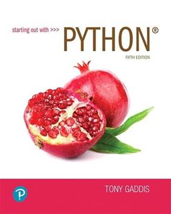

COURSE SYLLABUS
Introduction to Computer Programming
COP 1000, Section # 927
Semester 0615: Spring 2023
WELCOME
Welcome to COP1000! COP1000 is the foundation course for all computer programming courses in the College of Computer & Information Technology.
I am Professor Peters. I feel fortunate to be your professor this semester and to also have been a student at St. Petersburg College. My educational background includes a bachelor's degree in mathematics from the University of South Florida, a master's degree in instructional technology from the University of South Florida, and an Educator Preparation Institute Certificate from St. Petersburg College. My work experience includes a lengthy career in information technology and experience as a professionally certified high school teacher and as a college professor.
To help you be successful in this course; please become familiar with the course syllabus, submit each assignment by its due date, and attend every class. Please let me know as soon as possible if you are or were unable to submit an assignment on time or attend a class.
I look forward to your success in this course and hope you have an enjoyable and productive learning experience!
INSTRUCTOR
Name: Mark Peters
Email: peters.mark@spcollege.edu
Phone: 727-791-5941
Office and Online Chat Hours: By appointment during office hours listed at https://web.spcollege.edu/instructors/id/peters.mark/OFC/. Please use MyCourses' email for correspondence and scheduling.
Office Location: Clearwater Campus, Building/Room: ES 213D
Instructor Web Page: https://web.spcollege.edu/instructors/id/peters.mark
ACADEMIC DEPARTMENT
Acting CCIT Dean: Jimmy Chang
Office Location: St. Petersburg/Gibbs Campus, SA 215B
Office Phone Number: (727) 341-4305
Email: chang.jimmy@spcollege.edu
CCIT Program Contact: Laura Malave (Cybersecurity AS and certificate only)
Office Location: Epi-Center, 2-405
Office Phone Number: (727) 398-8285
Email: malave.laura@spcollege.edu
CCIT Program Contact: John Long (All LD and UD programs except Cybersecurity AS)
Office Location: Seminole, UP 337C
Office Phone Number: (727) 341-4620
Email: long.john@spcollege.edu
COURSE INFORMATION
Course Description: There are dozens of computer programming languages in the industry, but they all share some common features and capabilities. COP 1000 introduces the fundamental concepts, skills, and techniques needed to succeed as a computer programmer in any chosen programming language.
Course Goals: Students will learn to solve problems by coding computer programs, including programs requiring user inputs, selections, loops, functions, files, lists, and dictionaries.
Course Objectives:
The student will be able to write programs that:
- Read user keyboard inputs and assign same to variables of the appropriate data type.
- Perform calculations using basic arithmetic operators.
- Generate numeric output in specific formats.
- Use relational and logical operators in selections.
- Repeat blocks of statements in loops.
- Use both built-in and custom functions.
- Create and read text files that store data.
- Store data in lists and manipulate these lists.
- Store and retrieve data using dictionaries.
Additionally, the student will be able to:
- convert values between the decimal, binary, and hexadecimal number systems.
- write Python 3 programs that solve programming problems.
Prerequisites: Students will need reading skills sufficient for understanding the requirements of programming problems. Basic algebra skills will be needed to code programs that require calculations.
Availability of Course Content: This is a decision to be made by the individual instructor.
Other Critical Course Expectations: None
REQUIRED TEXTBOOK & OTHER RESOURCE INFORMATION

Required Textbook: Starting out with Python, 5th Edition, by Tony Gaddis
NOTE: The access Card is not required but may help you to learn Python.
Publisher Information: PEARSON Publishing
Textbooks site at http://www.spcollege.edu/textbooks/
SPC Libraries: http://www.spcollege.edu/libraries/
LEARNER SUPPORT
View the Disability Resources site
View the Academic Support site
View the On-Campus and Online Support site
· SPC campuses have Learning Support Centers (LSCs) where students can seek help.
· Paid tutors are available for help at no cost to students. Check the link above for days and times of our LSCs.
View the Student Services site
Students with special needs can obtain assistance at a campus Student Services site.
IMPORTANT DATES
Course Dates: 1/17/23 - 3/10/23 (first class meeting is 1/19/23 and last class meeting is 3/9/23)
Drop Date: See Academic Calendar
Withdrawal Date: See Academic Calendar
Location of Classes: Clearwater Campus, Building/Room: ES 205
Class Times: Thursdays 2:00 PM to 4:40 PM
Course closes: 3/9/23 @ 4:40 PM
Financial Aid Dates: View the Financial Aid Dates site
DISCIPLINE-SPECIFIC INFORMATION
ATTENDANCE
View the college-wide attendance policy included in the Syllabus Addendum.
Attendance will be based on the timely completion of course assessments.
GRADING
This is a 300‐point course, points being awarded according to the table below.
|
Category |
Details |
Points |
|
Pseudocode Discussion Postings |
2 problems @ 15,15 6 postings |
30 |
|
Python Chapter Quizzes *** |
7 quizzes @ 5 |
35 |
|
Python Preparation Assignments |
7 programs @ 5 |
35 |
|
Python Programming Assignments ** |
7 programs @ 25 points |
175 |
|
Number Systems Quiz * |
6 conversions with methods |
25 |
|
Total |
300 points |
|
*** Chapter Quizzes
- Unlimited attempts are permitted, highest score counts.
** Python Programming Assignments
- Up to two submissions are permitted if both are posted within seven days of the due date.
- Submissions more than seven days late will not be accepted.
* One attempt only
GRADING SYSTEM (IMPORTANT)
This course uses a points system to determine final grades:
Grade Point Thresholds
|
GRADE |
POINTS |
|
Grade A |
270 – 300 points |
|
Grade B |
240 – 269 points |
|
Grade C |
210 – 239 points |
|
Grade D |
180– 209 points |
|
Grade F |
0 – 179 points |
FINAL EXAM INFORMATION (cancelled by Covid-19)
ACADEMIC HONESTY:
All students are expected to abide by the SPC Honor Code, viewable at http://www.spcollege.edu/AcademicHonesty/
COLLABORATION POLICY (with tutors or classmates)
- Collaboration on quizzes and tests is strictly prohibited.
- SPC provides tutors an campus Learning Support Centers (LRCs): https://www.spcollege.edu/current-students/learning-resources
- Tutors are also available online at http://www.spcollege.edu/tutoring/
- If you contact a tutor, make sure that the tutor is aware of all assignment requirements (especially the requirement to use only methods in our course).
- Ask the tutor to teach you the concepts needed to solve the problem. Don't let the tutor write the program for you.
- You must ultimately code each problem solution by yourself without assistance.
- A suite of algorithms will be run to detect plagiarism in your code.
- If you collaborate with a tutor or others to solve the problem, identify your collaborator(s).
- If you did not work with anyone, you should write "Collaborators: none."
- If you obtain a solution through research (e.g., on the Web), acknowledge your source, but write up the solution in your own words.
- It is a violation of this policy to submit a problem solution that you cannot orally explain to the instructor.
- No other COP 1000 student may use your solutions. It is a violation of this collaboration policy to permit anyone other than staff and yourself read-access to the location where you keep your code. Plagiarism and other anti-intellectual behavior cannot be tolerated in any academic environment that prides itself on individual accomplishment. If you have any questions about the collaboration policy, or if you feel that you may have violated the policy, please talk to your instructor. We are more understanding and lenient if we find out from the transgressor rather than from a third party.
STUDENTS’ EXPECTATIONS AND INSTRUCTOR’S EXPECTATIONS
EXPECTATIONS FOR PYTHON ASSIGNMENTS
It is pointless to tackle coding assignments before learning the Python skills they require. It is expected that you will prepare for assignments by:
- Reading the relevant chapter in the course textbook.
- Entering and running the textbook example programs as you encounter them in the chapter.
- Working through all instructional links and documents in the relevant mycourses module.
- Completing the Chapter Quiz.
- Completing the assignment preparation assignment provided for each chapter.
- Python is a mature language and it is often possible to solve programming problems in more than one way, but your task is to demonstrate that you have grasped the Python concepts in the current module of this course.
- To earn grade points, the programs you submit must use the techniques in this course and only the techniques in the current or previous modules. Programs that don't use course coding techniques will not earn grade points.
- All programming problems in this course can be solved using the techniques in our course, so there is no need to seek help online.
- Contact your course professor if you need assistance.
HELP WITH PYTHON – STEPS TO TAKE
Resources are in place to help you, but the first move is yours.
- There is a Course Forum where you can ask questions. Your professor, or a classmate, will respond to help you.
- You can email your instructor with a Python question. Be specific and attach your code if necessary.
- Your instructor will strive to respond to emails within 24 hours on week days, 48 hours on weekends.
- You can seek out a tutor at a Learning Support Center. Look here: http://www.spcollege.edu/tutoring/
- Your professor may also be available during office hours. Refer to your professor’s instructor page.
Above all, take action immediately to avoid falling behind! Do not procrastinate!
At the 60% point of the course, students who are far behind (2 assignments) may be dropped.
PARTICIPATION, CONDUCT, & NETIQUETTE
SPC has outlined expectations for student behavior and interaction for online discussions, email, and other forms of communication. View the Student Expectations in the Syllabus Addendum.
COPYRIGHT
Copyrighted material within this course, or posted on this course website, is used in compliance with United States Copyright Law. Under that law you may use the material for educational purposes related to the learning outcomes of this course. You may not further download, copy, alter, or distribute the material unless in accordance with copyright law or with permission of the copyright holder. For more information on copyright visit: www.copyright.gov.
TURNITIN
The instructor of this course may require use of Turnitin.com as a tool to promote learning. The tool flags similarity and mechanical issues in written work that merit review. Use of the service enables students and faculty to identify areas that can be strengthened through improved paraphrasing, integration of sources, or proper citation. Submitted papers remain as source documents in the Turnitin database solely for the purpose of detecting originality. Students retain full copyright to their works. Review the Turnitin Usage Agreement. Students who do not wish to submit work through Turnitin must notify their instructor via course email within the first seven days of the course. In lieu of Turnitin use, faculty may require a student to submit copies of sources, preliminary drafts, a research journal, or an annotated bibliography.
STUDENT SURVEY OF INSTRUCTION
The Student Survey of Instruction is administered in courses each semester. It is designed to improve the quality of instruction at St. Petersburg College. All student responses are confidential and anonymous and will be used solely for the purpose of performance improvement.
TECHNOLOGY
MINIMUM REQUIREMENTS
View the MyCourses Minimum Technology Requirements
Students should know how to navigate the course and use the course tools. Dropbox-style assignments may require attachments in either Microsoft Word (.doc or .docx) or Rich Text Format (.rtf), so that they can be properly evaluated. If an attachment cannot be opened by the instructor, students will be required to re-format and re-submit an assignment so that it can be evaluated and returned with feedback.
Minimum Technical Skills:
MyCourses tutorials are available to students new to this LMS and are located at the beginning of the course. Most features on MyCourses are accessible on mobile devices, although you will need a computer for quizzes, tests, and Python assignments. Access to a Windows or Mac computer is required for this course. Chromebooks don't work.
Students must be able to run programs and save files on a computer.
ACCESSIBILITY OF TECHNOLOGY
View the MyCourses (Brightspace by Desire2Learn) Accessibility Statement
View the Google Accessibility Statement
View the Pearson Accessibility Statement
SPC Learning Support Centers have computers and software that you can use for this course.
PRIVACY
View the MyCourses (Brightspace by Desire2Learn) Privacy Statement
View the Google Privacy Statement
View the Pearson Privacy Statement
View the Python Privacy Statement
TECHNICAL SUPPORT
Technical support is available via the Technical Support Desk.
ACCESSIBILITY
This course is designed to be welcoming to, accessible to, and usable by everyone, including students who are English-language learners, have a variety of learning styles, have disabilities, or are new to online learning. Be sure to let me know immediately if you encounter a required element or resource in the course that is not accessible to you. Also, let me know of changes I can make to the course so that it is more welcoming to, accessible to, or usable by students who take this course in the future.
If you have documentation of a disability or feel you may have a disability:
St. Petersburg College recognizes the importance of equal access to learning opportunities for all students. Accessibility Services (AS) is the campus office that works with students who have disabilities to provide and/or arrange reasonable accommodations. Students registered with AS, who are requesting accommodations, are encouraged to contact their instructor by the first week of the semester. Students who have, or think they may have, a disability (e.g. learning disability, ADD/ADHD, psychiatric, medical/orthopedic, vision, and/or hearing), are invited to contact the Accessibility Coordinator (AC) that serves your campus for a confidential discussion. To find your AC for your specific campus, please go to the college-wide Accessibility Services website: https://www.spcollege.edu/accessibility
ESSENTIAL SKILLS AND TECHNICAL STANDARDS
The field of computers and information technology is intellectually and at times physically challenging. The Americans with Disabilities Act (ADA) and Section 504 of the Rehabilitation Act of 1973 ensure that qualified applicants have the ability to pursue program admission. However, all students must meet the essential skills and technical standards required of the St. Petersburg College of Computer and Information Technology Programs with or without reasonable accommodations for admission and completion of the program to prepare for the profession of study. Each student will be held to the same standards with or without reasonable accommodations. Our focus is the student and to best prepare him or her for the profession. Our goal is for them to enter and complete the program without barriers.
St. Petersburg College Essential Functions
College of Computer and Information Technology
The essential functions described in this document are based on the knowledge and skills as prescribed by the Florida State Department of Education’s Curriculum Framework for each AS degree in the College of Computer and Information Technology. Students who graduate from the following AS Programs are required to meet the expectations of the program’s essential functions, and the functions list assists students in determining whether they can meet the performance expectations of the program, with or without accommodations.
SPC CCIT Computer and Programming Analysis AS: Essential Functions
|
ESSENTIAL COMPETENCY |
FUNCTION |
EXAMPLES OF REQUIRED FUNCTIONS (not all inclusive) |
|
Interpersonal Communication |
Customer service, human relations and communication skills sufficient for effective interaction with others, whether in verbal or oral formats. |
Communicate effectively with clients and team and members by displaying excellent verbal/oral, written communication and listening skills. Ability to demonstrate appropriate positive social skills to interact with clients, team members and colleagues. |
|
Critical Thinking |
Using logic and reasoning to identify the strengths and weaknesses of alternative solutions, conclusions or approaches to problems. |
Demonstrate ability to conceptualize, analyze, synthesize, and evaluate a problem and propose an adequate solution. Analyze and evaluate problems to determine if given data and information will produce required outputs. |
|
Complex Problem Solving |
Identifying complex problems and reviewing related information to develop and evaluate options and implement solutions |
Capacity to solve novel, ill-defined problems in a complex, real-world setting. Ability to reduce a complex problem to a series of ordered steps. Identify both positive and negative factors that could impact the solution to a problem and prepare measures to manage those factors |
|
Computation |
Applying the knowledge of mathematics to solve problems |
Identify mathematical and statistical analysis procedures needed to develop a solution. Ability to apply similar problem solving techniques utilized in mathematics to solve logical computing and technology problems. |
|
Programming and Analysis |
An understanding of writing computer programs by describing the process, procedure and the algorithm |
Articulate a series of actions or steps to achieve an end in a certain order. Evaluate an ordered set of steps to solve a problem. Determine the precision and accuracy required for a task. |
|
Professional |
Broad understanding of the industry and demonstrated programming and technical skills |
Maintain knowledge of the tools, techniques and resources to remain current in the IT field. Ability to complete an internship in the IT field. Develop the skills needed to take the aligned industry certification(s). |
SPC CCIT Computer Information Technology AS: Essential Functions
|
ESSENTIAL COMPETENCY |
FUNCTION |
EXAMPLES OF REQUIRED FUNCTIONS (not all inclusive) |
|
Interpersonal Communication |
Customer service, human relations and communication skills sufficient for effective interaction with others, whether in verbal or oral formats. |
Communicate effectively with clients and team and members by displaying excellent verbal/oral, written communication and listening skills. Ability to demonstrate appropriate positive social skills to interact with clients, team members and colleagues. |
|
Critical Thinking |
Using logic and reasoning to identify the strengths and weaknesses of alternative solutions, conclusions or approaches to problems. |
Demonstrate ability to conceptualize, analyze, synthesize, and evaluate a problem and propose an adequate solution. Analyze and evaluate problems to determine if given data and information will produce required outputs. |
|
Complex Problem Solving |
Identifying complex problems and reviewing related information to develop and evaluate options and implement solutions |
Capacity to solve novel, ill-defined problems in a complex, real-world setting. Ability to reduce a complex problem to a series of ordered steps. Identify both positive and negative factors that could impact the solution to a problem and prepare measures to manage those factors |
|
Computation |
Applying the knowledge of mathematics to solve problems |
Identify mathematical and statistical analysis procedures needed to develop a solution. Ability to apply similar problem solving techniques utilized in mathematics to solve logical computing and technology problems. |
|
Programming and Analysis |
An understanding of writing computer programs by describing the process, procedure and the algorithm |
Articulate a series of actions or steps to achieve an end in a certain order. Evaluate an ordered set of steps to solve a problem. Determine the precision and accuracy required for a task. |
|
Professional |
Broad understanding of the industry and demonstrated programming and technical skills |
Maintain knowledge of the tools, techniques and resources to remain current in the IT field. Ability to complete an internship in the IT field. Develop the skills needed to take the aligned industry certification(s). |
SPC CCIT Computer Networking AS: Essential Functions
|
ESSENTIAL COMPETENCY |
FUNCTION |
EXAMPLES OF REQUIRED FUNCTIONS (not all inclusive) |
|
Interpersonal Communication |
Customer service, human relations and communication skills sufficient for effective interaction with others, whether in verbal or oral formats. |
Communicate effectively with clients and team and members by displaying excellent verbal/oral, written communication and listening skills. Ability to demonstrate appropriate positive social skills to interact with clients, team members and colleagues. |
|
Critical Thinking |
Using logic and reasoning to identify the strengths and weaknesses of alternative solutions, conclusions or approaches to problems. |
Demonstrate ability to conceptualize, analyze, synthesize, and evaluate a problem and propose an adequate solution. Analyze and evaluate problems to determine if given data and information will produce required outputs. |
|
Complex Problem Solving |
Identifying complex problems and reviewing related information to develop and evaluate options and implement solutions |
Capacity to solve novel, ill-defined problems in a complex, real-world setting. Ability to reduce a complex problem to a series of ordered steps. Identify both positive and negative factors that could impact the solution to a problem and prepare measures to manage those factors |
|
Computation |
Applying the knowledge of mathematics to solve problems |
Identify mathematical and statistical analysis procedures needed to develop a solution. Ability to apply similar problem solving techniques utilized in mathematics to solve logical computing and technology problems. |
|
Programming and Analysis |
An understanding of writing computer programs by describing the process, procedure and the algorithm |
Articulate a series of actions or steps to achieve an end in a certain order. Evaluate an ordered set of steps to solve a problem. Determine the precision and accuracy required for a task. |
|
Professional |
Broad understanding of the industry and demonstrated programming and technical skills |
Maintain knowledge of the tools, techniques and resources to remain current in the IT field. Ability to complete an internship in the IT field. Develop the skills needed to take the aligned industry certification(s). |
SPC CCIT Cybersecurity AS: Essential Functions
|
ESSENTIAL COMPETENCY |
FUNCTION |
EXAMPLES OF REQUIRED FUNCTIONS (not all inclusive) |
|
Interpersonal Communication |
Customer service, human relations and communication skills sufficient for effective interaction with others, whether in verbal or oral formats. |
Communicate effectively with clients and team and members by displaying excellent verbal/oral, written communication and listening skills. Ability to demonstrate appropriate positive social skills to interact with clients, team members and colleagues. |
|
Critical Thinking |
Using logic and reasoning to identify the strengths and weaknesses of alternative solutions, conclusions or approaches to problems. |
Demonstrate ability to conceptualize, analyze, synthesize, and evaluate a problem and propose an adequate solution. Analyze and evaluate problems to determine if given data and information will produce required outputs. |
|
Complex Problem Solving |
Identifying complex problems and reviewing related information to develop and evaluate options and implement solutions |
Capacity to solve novel, ill-defined problems in a complex, real-world setting. Ability to reduce a complex problem to a series of ordered steps. Identify both positive and negative factors that could impact the solution to a problem and prepare measures to manage those factors |
|
Computation |
Applying the knowledge of mathematics to solve problems |
Identify mathematical and statistical analysis procedures needed to develop a solution. Ability to apply similar problem solving techniques utilized in mathematics to solve logical computing and technology problems. |
|
Programming and Analysis |
An understanding of writing computer programs by describing the process, procedure and the algorithm |
Articulate a series of actions or steps to achieve an end in a certain order. Evaluate an ordered set of steps to solve a problem. Determine the precision and accuracy required for a task. |
|
Professional |
Broad understanding of the industry and demonstrated programming and technical skills |
Maintain knowledge of the tools, techniques and resources to remain current in the IT field. Ability to complete an internship in the IT field. Develop the skills needed to take the aligned industry certification(s). |
SPC CCIT Web Development AS: Essential Function
|
ESSENTIAL COMPETENCY |
FUNCTION |
EXAMPLES OF REQUIRED FUNCTIONS (not all inclusive) |
|
Interpersonal Communication |
Customer service, human relations and communication skills sufficient for effective interaction with others, whether in verbal or oral formats. |
Communicate effectively with clients and team and members by displaying excellent verbal/oral, written communication and listening skills. Ability to demonstrate appropriate positive social skills to interact with clients, team members and colleagues. |
|
Critical Thinking |
Using logic and reasoning to identify the strengths and weaknesses of alternative solutions, conclusions or approaches to problems. |
Demonstrate ability to conceptualize, analyze, synthesize, and evaluate a problem and propose an adequate solution. Analyze and evaluate problems to determine if given data and information will produce required outputs. |
|
Complex Problem Solving |
Identifying complex problems and reviewing related information to develop and evaluate options and implement solutions |
Capacity to solve novel, ill-defined problems in a complex, real-world setting. Ability to reduce a complex problem to a series of ordered steps. Identify both positive and negative factors that could impact the solution to a problem and prepare measures to manage those factors |
|
Computation |
Applying the knowledge of mathematics to solve problems |
Identify mathematical and statistical analysis procedures needed to develop a solution. Ability to apply similar problem solving techniques utilized in mathematics to solve logical computing and technology problems. |
|
Programming and Analysis |
An understanding of writing computer programs by describing the process, procedure and the algorithm |
Articulate a series of actions or steps to achieve an end in a certain order. Evaluate an ordered set of steps to solve a problem. Determine the precision and accuracy required for a task. |
|
Professional |
Broad understanding of the industry and demonstrated programming and technical skills |
Maintain knowledge of the tools, techniques and resources to remain current in the IT field. Ability to complete an internship in the IT field. Develop the skills needed to take the aligned industry certification(s). |